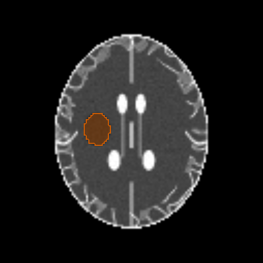
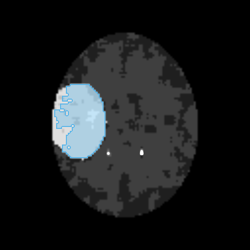
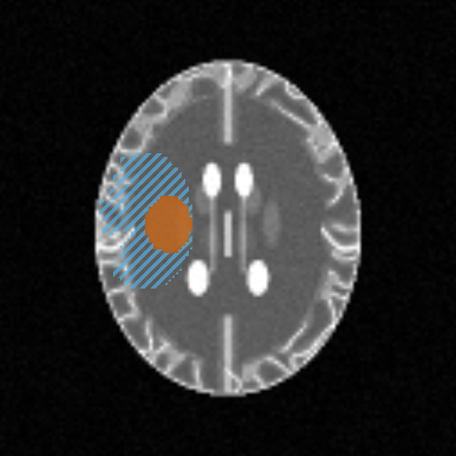

1 · Diffusion

ADC [×10⁻⁶ mm²/s]
DTI 32dir · b 0/1000 · Slice 4/8
DTI 32dir · b 0/1000 · Slice 4/8
PHANTOM^SYNTHETIC
NMR-PHANTOM-001 · 2026-01-01
NMR-PHANTOM-001 · 2026-01-01
Core ADC < 620 ×10⁻⁶ mm²/s · 5.25 cm²
Segmentation opacity 65 %
Segmentation opacity 65 %
Zoom 100 %
1.8 × 1.8 mm · 128 × 128
APRL
1.8 × 1.8 mm · 128 × 128
2 · Perfusion

Tmax [s]
Deconvolution · Gray · Slice 4/8
Deconvolution · Gray · Slice 4/8
PHANTOM^SYNTHETIC
NMR-PHANTOM-001 · 2026-01-01
NMR-PHANTOM-001 · 2026-01-01
Deficit Tmax > 6.0 s
Segmentation opacity 65 %
Segmentation opacity 65 %
Zoom 100 %
1.8 × 1.8 mm · 128 × 128
APRL
1.8 × 1.8 mm · 128 × 128
3 · Anatomical
DWI b0

DWI b0 · Slice 4/8
Registered to perfusion · scroll linked
Registered to perfusion · scroll linked
PHANTOM^SYNTHETIC
NMR-PHANTOM-001 · 2026-01-01
NMR-PHANTOM-001 · 2026-01-01
W 2183.6 · L 1097.9 a.u.
Segmentation opacity 65 %
Segmentation opacity 65 %
Zoom 100 %
1.8 × 1.8 mm · 128 × 128
1.8 × 1.8 mm · 128 × 128
Core 9.4 ml
Penumbra 67.4 ml
APRL
4 · Regions
Regions
Click a slice column to jump to it| Region | Slice 3[cm²] | Slice 4[cm²] | Slice 5[cm²] | Volume[ml] | Mean ADC[×10⁻⁶ mm²/s] |
|---|---|---|---|---|---|
| Core 1 | 5.57 | 5.25 | 3.14 | 9.4 | 468 |
| Deficit 1 | 23.39 | 23.39 | 23.20 | 76.8 | 806 |
| Penumbra | 17.82 | 18.14 | 20.06 | 67.4 | 853 |
5 · Mismatch
Mismatch
Registration not reviewed| Measure | Value | Unit |
|---|---|---|
| Perfusion volume Tmax > 6.0 s | 76.8 | ml |
| Diffusion volume ADC < 620 | 9.4 | ml |
| Mismatch volume | 67.4 | ml |
| Mismatch ratio (perf − diff) / perf | 87.8 | % |
6 · Graph
DSC signal · Slice 4/8